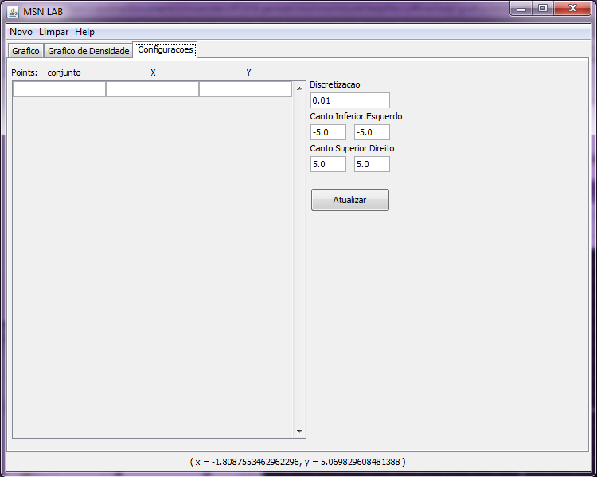
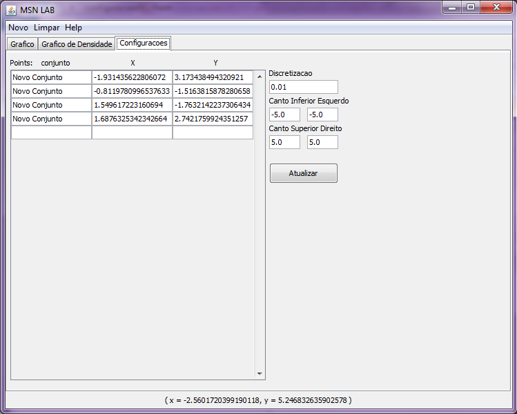

Para configurar os pontos no grafico, podemos definir numericamentes.
O valor esperado na primeira coluna é o nome do conjunto que aquele ponto ira participar. As outras duas celulas são para definir o X e o Y do ponto em questão.

Inserindo valores, a aba configuraçoes se mostra da seguinte maneira:
